|
 |
 |
Puntos de
Inflexión Ecológica
- Cómo funcionan?
- Transformando círculos viciosos a círculos virtuosos
- Ingredientes para el éxito
- Elaboren sus propios Puntos de Inflexión Ecológica
Historias por Región
Historias por Tema
- Agricultura
- Agua y Cuencas
- Bosques
- Ecosistemas Urbanos
- Educación
- Energía
- Negocios
- Pesquerías
- Salud Pública
Videos Cortos
- Salvando un arrecife coral y una pesquería
(Filipinas) - Revitalizando vecindades urbanas con jardines comunitarios
(Nueva York) - Revirtiendo la deforestación tropical con bosques comunitarios
(Thailandia) - Rellenando aguas subterráneas con captación pluvial
(Rajastán, India) - Escapando la trampa de pesticidas
(India)
Explicando el Éxito
- Salvando un arrecife coral y una pesquería
(Filipinas) - Revitalizando vecindades urbanas con jardines comunitarios
(Nueva York) - Revirtiendo la deforestación tropical con bosques comunitarios
(Thailandia) - Rellenando aguas subterráneas con captación pluvial
(Rajastán, India) - Escapando la trampa de pesticidas
(India)

Ecología Humana: Presenta los principios de la ecología humana que sirven de fundamento a los Puntos de Inflexión Ecológica
Filipinas - Isla Apo - El Santuario Marino de la Isla Apo: Restaurando la Pesquería del Arrecife Coral
- Breve: Un santuario marino rescata a una pesquería y un ecosistema arrecifal al borde del colapso.
- Lea la historia detallada
- Fotos tomadas por Amanda Suutari - Todas las fotos están disponibles para descargarse gratis; favor de atribuir a la fotógrafa y al sitio de Internet.
- Pulse sobre la foto para ver los detalles.

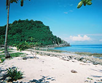
Marine Sanctuary

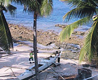
Apo Fishermen

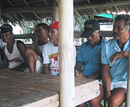
Apo Marine Guard

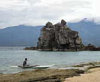
Beach Landing

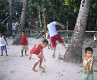
Palm Tree Jumping

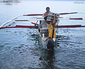
Building Bricks

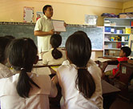
Classroom

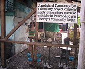
Community Gym

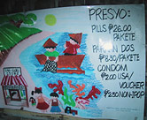
Condoms for Sale

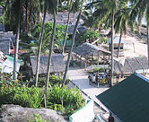
Downtown Apo

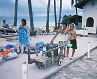
Drinking Water

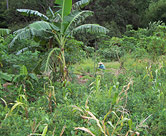
Farming

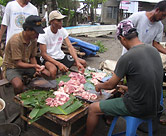
Feast

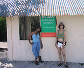
Sanctuary Fee Kiosk

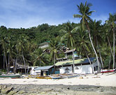
Hotel Beach Front

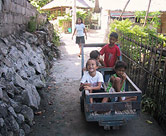
Island Transport

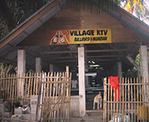
Karaoke Bar

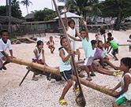
Kids at Beach

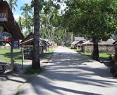
Main Street

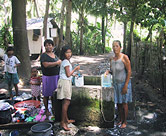
Villagers Using Well

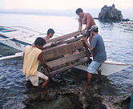
Pig to Market

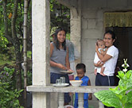
Relaxing at Home

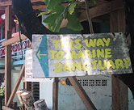
Sanctuary Sign

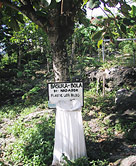
Recycle Bin

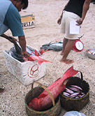
Selling Catch